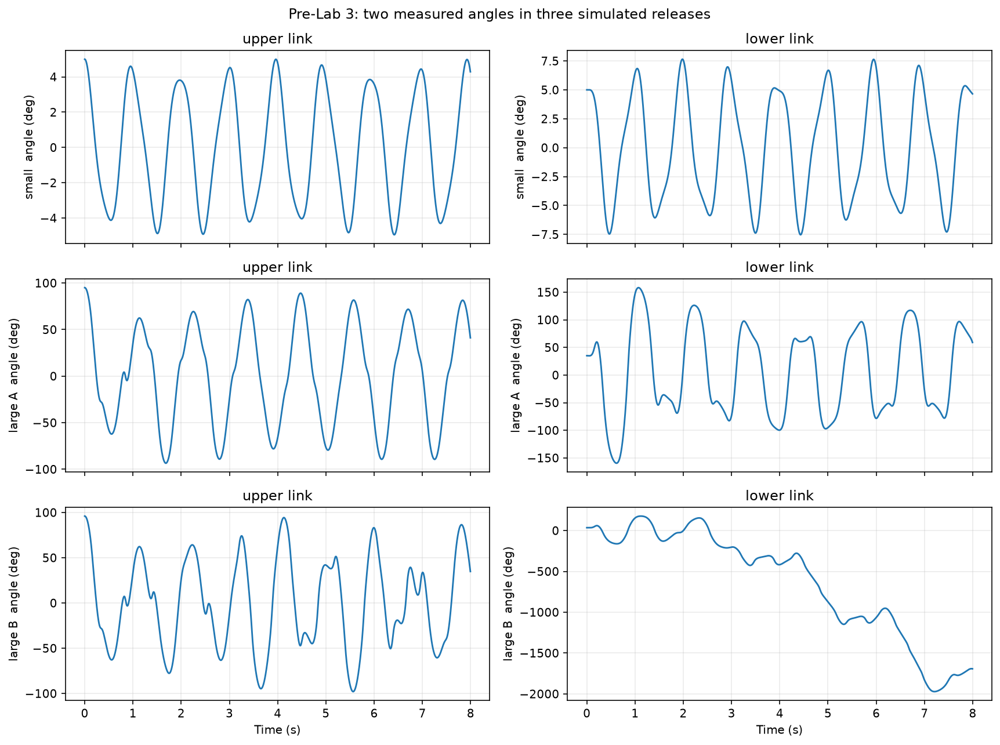
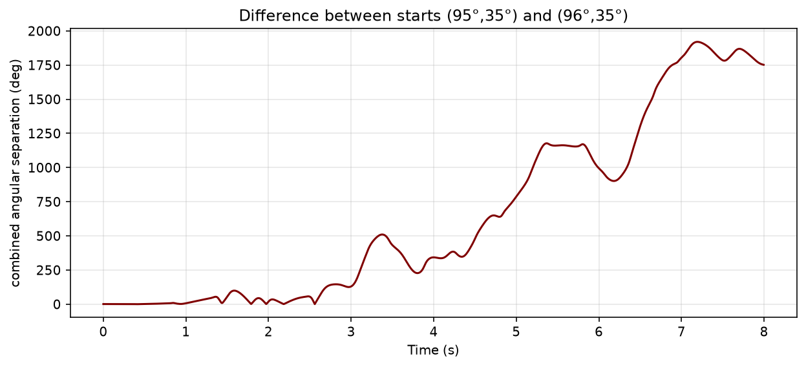
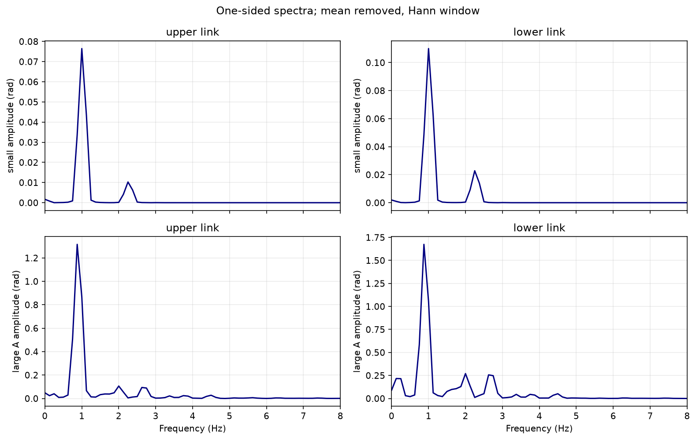

Fall 2026 · Worked solutions
Pre-Lab 3 · Double pendulum
Reference answers and figures for the Fall 2026 notebook. The numbers below are from the supplied simulations.
1. Geometry and angle convention
Draw the fixed pivot, the first moving joint, and the lower bob in that order. Label the pivot-to-joint distance L1 and the joint-to-lower-bob distance L2. Put m1 and m2 on their respective bars and M1 and M2 at the moving joint and lower bob. Draw both angle arcs from the downward vertical, translating the reference line to the moving joint for the lower link.
fixed pivot
│ L₁, bar m₁
● M₁ (moving joint)
│ L₂, bar m₂
● M₂ (lower bob)
Both angles are zero with the rods hanging straight down. With the analyzer's upward-positive vertical coordinates, use the vector (x2 − x1, y2 − y1) from the moving joint to the lower bob. Thus θ2 = atan2(x2 − x1, −(y2 − y1)). The relative joint angle is θ2 − θ1.
2. Prediction and controlled comparison
The (5°, 5°) release should show the most regular traces because the small-angle approximation applies. The 1° comparison uses Large A (95°, 35°) and Large B (96°, 35°). Hold both lengths, all masses, gravity, and both initial angular velocities fixed so the change in the upper link's release angle is the only physical input that differs. Pivot friction and air drag can dissipate energy in the apparatus.
3. Angle histories

In the small release, the upper link stays near ±5° and the lower link near ±8°, with regular oscillations. In Large A the upper link reaches roughly ±95° and has a more varied waveform. The lower link reaches roughly ±160° and shows sharp changes in its motion. In Large B the upper link continues to oscillate, while the lower link makes repeated full turns. The large-angle traces show how strongly the two motions interact.
4. Sensitivity to the initial angle

The separation starts at 1°, reaches 6.796° at 1 s and 994.819° at 6 s. By the later time the lower link's accumulated turns contribute strongly to the difference. This run illustrates sensitivity to a small change at release. A finite trace, particularly with a rotation-counting angle measure, does not establish chaos. That would require evidence over longer trajectories and appropriate checks such as timestep convergence and a sustained positive Lyapunov exponent.
5. Frequency spectra

Both low-angle spectra show peaks near 1.00 Hz and 2.25 Hz, with the lower-frequency peak stronger in both links. The linear model gives about 1.011 and 2.267 Hz, consistent with the 0.125 Hz FFT bin spacing. Each angle can contain both modes. For Large A the strongest peak shifts to about 0.875 Hz, and additional content appears across the band, especially for the lower link. The peaks describe frequency components of each angle signal.
6. Plan the measurement
- Record one small nonzero aligned release and three larger-angle releases, including two nearby but distinct starts. Record the angles actually visible at release and whether the links started from rest.
- Record the two bar masses, two lumped masses, two pivot-to-center lengths, calibration distance, camera capture rate, and trial names.
- In Quick Review, check that the fixed pivot and both bob centers are assigned correctly, remain visible throughout, and give nearly constant link lengths without jumps.
- Save the original videos, calibration and timing settings, and the exported
ExpDataMAT files. Show the GTA the two angle histories, angular velocities, spectra, and tracking-quality plots for at least one complete trial.